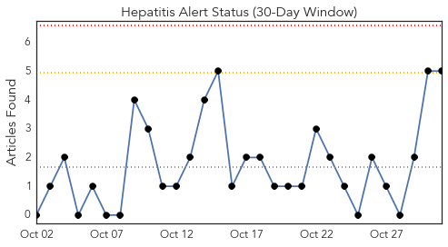
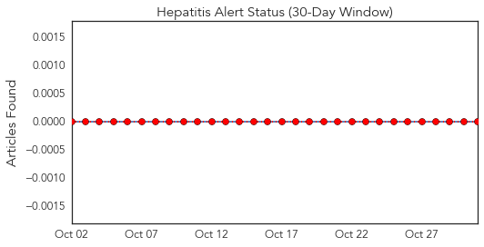
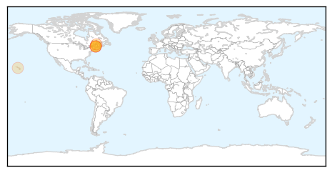
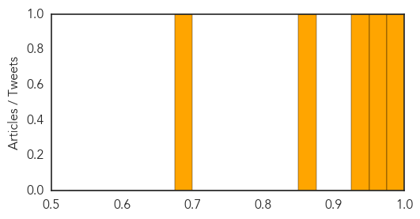
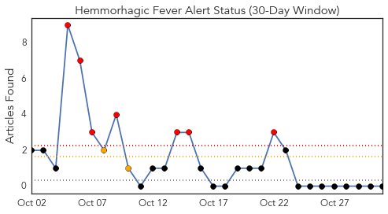
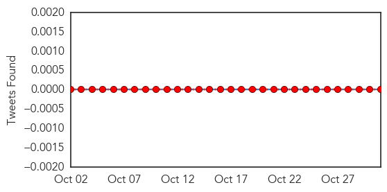
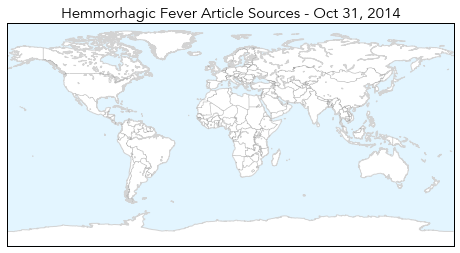

Hepatitis
30-Day Web Trend
0 alerts, 0 warnings

30-Day Twitter Trend
0 alerts, 0 warnings

Article Locations
Article Confidences
Top Articles:
- 0.984
- Maine: Cumberland County food service worker tests positive for hepatitis A, public advised
- 0.968
- State won't name restaurant where worker had hepatitis A
- 0.934
- Maine CDC: Patrons of Unnamed Restaurant May Have Been Exposed to Hepatitis A
- 0.865
- Food worker possibly exposes patrons to Hepatitis A
- 0.675
- Maui’s Weekly Online and Television News Program
Top Tweets:
-
No tweets found for Oct 31, 2014
Hemmorhagic Fever
30-Day Web Trend
7 alerts, 2 warnings

30-Day Twitter Trend
0 alerts, 0 warnings

Article Locations
Article Confidences

Top Articles:
-
No articles found for Oct 31, 2014
Top Tweets:
-
No tweets found for Oct 31, 2014